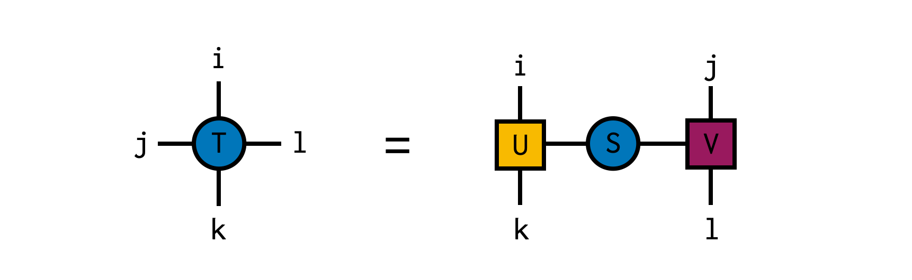

Introduction
| Documentation |
|---|
| Build Status |
|---|
| Citation |
|---|
| Style Guide |
|---|
ITensor is a library for rapidly creating correct and efficient tensor network algorithms.
The source code for ITensor can be found on Github.
Additional documentation can be found on the ITensor website itensor.org.
An ITensor is a tensor whose interface is independent of its memory layout. ITensor indices are objects which carry extra information and which 'recognize' each other (compare equal to each other).
The ITensor library also includes composable and extensible algorithms for optimizing and transforming tensor networks, such as matrix product state and matrix product operators, such as the DMRG algorithm.
Development of ITensor is supported by the Flatiron Institute, a division of the Simons Foundation.
News
ITensors.jl v0.2 has been released, with a few breaking changes as well as a variety of bug fixes and new features. Take a look at the upgrade guide for help upgrading your code as well as the change log for a comprehensive list of changes.
Installation
The ITensors package can be installed with the Julia package manager. From the Julia REPL, type ] to enter the Pkg REPL mode and run:
~ juliajulia> ]
pkg> add ITensorsOr, equivalently, via the Pkg API:
julia> import Pkg; Pkg.add("ITensors")Please note that right now, ITensors.jl requires that you use Julia v1.3 or later (since ITensors.jl relies on a feature that was introduced in Julia v1.3).
We recommend using ITensors.jl with Intel MKL in order to get the best possible performance. If you have not done so already, you can replace your current BLAS and LAPACK implementation with MKL by using the MKL.jl package. Please follow the instructions here.
Documentation
- STABLE – documentation of the most recently tagged version.
- DEVEL – documentation of the in-development version.
Citation
If you use ITensor in your work, for now please cite the arXiv preprint:
@misc{itensor,
title={The \mbox{ITensor} Software Library for Tensor Network Calculations},
author={Matthew Fishman and Steven R. White and E. Miles Stoudenmire},
year={2020},
eprint={2007.14822},
archivePrefix={arXiv}
}Full Example Codes
The ITensors.jl package contains a directory of examples, which we will continue to add to. You can find them online here. Additionally, once you have installed ITensors.jl you can find a local version of the examples in the directory ITensors.examples_dir(), and you can run them as follows from the Julia REPL:
julia> using ITensors
julia> cd(ITensors.examples_dir())
julia> readdir()
7-element Array{String,1}:
"basic_ops"
"ctmrg"
"dmrg"
"gate_evolution"
"krylov_methods"
"src"
"trg"
julia> cd("dmrg")
julia> readdir()
8-element Array{String,1}:
"1d_heisenberg.jl"
"1d_heisenberg_conserve_spin.jl"
"1d_hubbard_extended.jl"
"1d_ising_with_observer.jl"
"2d_heisenberg_conserve_spin.jl"
"2d_hubbard_conserve_momentum.jl"
"2d_hubbard_conserve_particles.jl"
"input_files"
julia> include("1d_heisenberg.jl")
sweeps = Sweeps
1 cutoff=1.0E-11, maxdim=10, mindim=1, noise=0.0E+00
2 cutoff=1.0E-11, maxdim=20, mindim=1, noise=0.0E+00
3 cutoff=1.0E-11, maxdim=100, mindim=1, noise=0.0E+00
4 cutoff=1.0E-11, maxdim=100, mindim=1, noise=0.0E+00
5 cutoff=1.0E-11, maxdim=200, mindim=1, noise=0.0E+00
After sweep 1 energy=-138.837988775764 maxlinkdim=10 time=13.760
After sweep 2 energy=-138.937408365962 maxlinkdim=20 time=0.249
After sweep 3 energy=-138.940084788852 maxlinkdim=100 time=1.867
After sweep 4 energy=-138.940086091070 maxlinkdim=100 time=3.824
After sweep 5 energy=-138.940086113999 maxlinkdim=122 time=4.527
Final energy = -138.940086113999
julia> pwd()
"[path_to_package_installation]/ITensors/examples/dmrg"You can use your favorite text editor to view these examples. If you would like to modify them, either copy them into your own directory, or checkout ITensors.jl in development mode using the instructions in Developing ITensors.jl.
ITensor Code Samples
Basic Overview
ITensor construction, setting of elements, contraction, and addition. Before constructing an ITensor, one constructs Index objects representing tensor indices.
using ITensors
let
i = Index(3)
j = Index(5)
k = Index(2)
l = Index(7)
A = ITensor(i,j,k)
B = ITensor(j,l)
# Set elements of A
A[i=>1,j=>1,k=>1] = 11.1
A[i=>2,j=>1,k=>2] = -21.2
A[k=>1,i=>3,j=>1] = 31.1 # can provide Index values in any order
# ...
# Contract over shared index j
C = A * B
@show hasinds(C,i,k,l) # = true
D = randomITensor(k,j,i) # ITensor with random elements
# Add two ITensors
# must have same set of indices
# but can be in any order
R = A + D
nothing
endSingular Value Decomposition (SVD) of a Matrix
In this example, we create a random 10x20 matrix and compute its SVD. The resulting factors can be simply multiplied back together using the ITensor * operation, which automatically recognizes the matching indices between U and S, and between S and V and contracts (sums over) them.
using ITensors
let
i = Index(10) # index of dimension 10
j = Index(20) # index of dimension 20
M = randomITensor(i,j) # random matrix, indices i,j
U,S,V = svd(M,i) # compute SVD with i as row index
@show M ≈ U*S*V # = true
nothing
endSingular Value Decomposition (SVD) of a Tensor
In this example, we create a random 4x4x4x4 tensor and compute its SVD, temporarily treating the indices i and k together as the "row" index and j and l as the "column" index for the purposes of the SVD. The resulting factors can be simply multiplied back together using the ITensor * operation, which automatically recognizes the matching indices between U and S, and between S and V and contracts (sums over) them.

using ITensors
let
i = Index(4,"i")
j = Index(4,"j")
k = Index(4,"k")
l = Index(4,"l")
T = randomITensor(i,j,k,l)
U,S,V = svd(T,i,k) # compute SVD with (i,k) as row indices (indices of U)
@show hasinds(U,i,k) # = true
@show hasinds(V,j,l) # = true
@show T ≈ U*S*V # = true
nothing
endTensor Indices: Tags and Prime Levels
Before making an ITensor, you have to define its indices. Tensor Index objects carry extra information beyond just their dimension.
All Index objects carry a permanent, immutable id number which is determined when it is constructed, and allow it to be matched (compare equal) with copies of itself.
Additionally, an Index can have up to four tag strings, and an integer primelevel. If two Index objects have different tags or different prime levels, they do not compare equal even if they have the same id.
Tags are also useful for identifying Index objects when printing tensors, and for performing certain Index manipulations (e.g. priming indices having certain sets of tags).
using ITensors
let
i = Index(3) # Index of dimension 3
@show dim(i) # = 3
@show id(i) # = 0x5d28aa559dd13001 or similar
ci = copy(i)
@show ci == i # = true
j = Index(5,"j") # Index with a tag "j"
@show j == i # = false
s = Index(2,"n=1,Site") # Index with two tags,
# "Site" and "n=1"
@show hastags(s,"Site") # = true
@show hastags(s,"n=1") # = true
i1 = prime(i) # i1 has a "prime level" of 1
# but otherwise same properties as i
@show i1 == i # = false, prime levels do not match
nothing
endDMRG Calculation
DMRG is an iterative algorithm for finding the dominant eigenvector of an exponentially large, Hermitian matrix. It originates in physics with the purpose of finding eigenvectors of Hamiltonian (energy) matrices which model the behavior of quantum systems.
using ITensors
let
# Create 100 spin-one indices
N = 100
sites = siteinds("S=1",N)
# Input operator terms which define
# a Hamiltonian matrix, and convert
# these terms to an MPO tensor network
# (here we make the 1D Heisenberg model)
ampo = OpSum()
for j=1:N-1
ampo += "Sz",j,"Sz",j+1
ampo += 0.5,"S+",j,"S-",j+1
ampo += 0.5,"S-",j,"S+",j+1
end
H = MPO(ampo,sites)
# Create an initial random matrix product state
psi0 = randomMPS(sites)
# Plan to do 5 passes or 'sweeps' of DMRG,
# setting maximum MPS internal dimensions
# for each sweep and maximum truncation cutoff
# used when adapting internal dimensions:
sweeps = Sweeps(5)
setmaxdim!(sweeps, 10,20,100,100,200)
setcutoff!(sweeps, 1E-10)
@show sweeps
# Run the DMRG algorithm, returning energy
# (dominant eigenvalue) and optimized MPS
energy, psi = dmrg(H,psi0, sweeps)
println("Final energy = $energy")
nothing
end